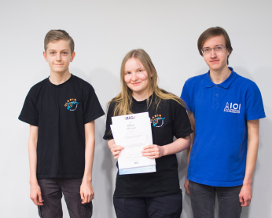

Datatähti 2017 -loppukilpailu järjestettiin 19.1.2017 Aalto-yliopiston tietotekniikan laitoksella. Loppukilpailuun kutsuttiin 19 osallistujaa alkukilpailun tulosten perusteella.
Loppukilpailussa oli 5 tuntia aikaa ratkaista 7 ohjelmointitehtävää. Jokaisesta tehtävästä pystyi saamaan 0–100 pistettä.
Loppukilpailun tulokset ovat tässä:
| sija | nimi | koulu | pisteet |
|---|---|---|---|
| 1 | Siiri Kuoppala | Olarin lukio | 554 |
| 2 | Juha Harviainen | Helsingin matematiikkalukio | 501 |
| 3 | Roope Salmi | Olarin koulu | 477 |
| 4 | Antti Röyskö | Päivölän opisto | 466 |
| 5 | Miska Kananen | Jyväskylän normaalikoulun lukio | 381 |
| 6 | Ossi Sulkakoski | Hyvinkään Sveitsin lukio | 370 |
| 7 | Iikka Hauhio | Helsingin matematiikkalukio | 324 |
| 8 | Jesse Niininen | Hyria Kauppalankatu | 323 |
| 9 | Joose Lehtinen | Päivölän opisto | 286 |
| 10 | Onni Rantanen | Uudenkaupungin lukio | 275 |
| 11 | Pinja Pessi | Päivölän opisto | 258 |
| 12 | Santeri Kääriäinen | Tampereen yhteiskoulun lukio | 249 |
| 13 | Oula Kivalo | Helsingin luonnontiedelukio | 228 |
| 14 | Kai Hartzell | Helsingin luonnontiedelukio | 223 |
| 15 | Otto Väyrynen | Ylöjärven lukio | 200 |
| 16 | Théo Friberg | Olarin lukio | 172 |
| 17 | Kasperi Raninen | Uudenkaupungin lukio | 172 |
| 18 | Laura Saarhelo | Olarin lukio | 128 |
| 19 | Konsta Tiilikainen | Ressun lukio | 100 |